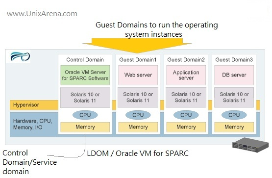

Black -
White -
League -
Sky -
Beige -
Simple
Serif -
Blood -
Night -
Moon -
Solarized
UltraSPARC T2 («Niagara 2») — многоядерный многопотоковый микропроцессор от Sun Microsystems.
Представитель семейства процессоров SPARC и последователь UltraSPARC T1
T2 -- октябрь 2007 года,
T2 Plus -- апрель 2008 года,
T3 -- 2010 год.
Главная особенность T2+ по сравнению с T2 -- принцип SMP
Симметричная мультипроцессорность (Symmetric Multiprocessing, сокращённо SMP) — архитектура многопроцессорных компьютеров, в которой два или более одинаковых процессора сравнимой производительности подключаются единообразно к общей памяти (и периферийным устройствам) и выполняют одни и те же функции
Как и T1, T2 поддерживает гипер-привилегированный режим (Hyper-Privileged execution mode). В этом режиме работает гипервизор SPARC, который может разбить T2 на 64 логических домена (LDoms), в каждом из которых может работать своя операционная система
Технология виртуализации и разделения физических ресурсов для линейки UNIX-серверов, основанных на архитектуре SPARC V9
Каждый логический домен представляет собой полноценную виртуальную машину с набором аппаратных ресурсов. Операционные системы, работающие внутри отдельных доменов, могут независимо запускаться, останавливаться или перезагружаться.

В случае серверной конфигурации с использованием общего хранилища данных, появляется возможность живой миграции логических доменов с одного сервера на другой без необходимости их останова (начиная с Oracle VM Server for SPARC версии 2.1). При этом используется метод безопасной высокоскоростной передачи между серверами содержимого памяти виртуальных машин, при помощи шифрования выделенными модулями криптографических ускорителей, имеющимися во всех процессорах микроархитектуры sun4v.
“Тяжелые” серверные приложения
ERP-системы SAP, CRM-системы Siebel
Oracle DB
Виртуализация с помощью контейнеров Solaris
SPU на каждом ядре работает параллельно с ядром на той же самой частоте. Модуль шифрования/хеширования поддерживает DES, 3DES, AES, RC4, SHA1, SHA256, MD5, RSA-2048, ECC, CRC32.
SPU разрабатывался, чтобы достигнуть проводной скорости шифрования и дешифрования на процессорных портах 10 GbE.
Вопросы?